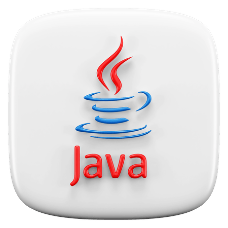
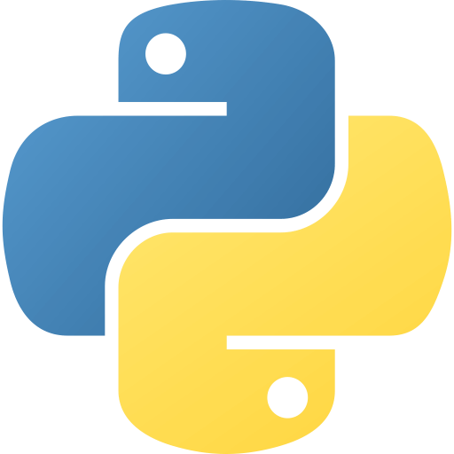
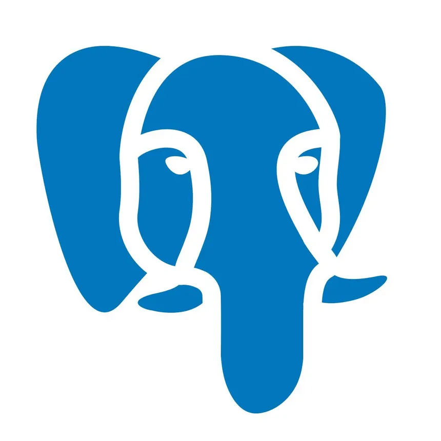

I am an MS by Research student in Intelligent System in Department of Computer Science and Engineering at IIT Bomabay. A tech enthusist, want to explore more in learning. Manily do bore kinds of stuff, which is fun to me. Want to explore what God has offered. Never sit in noise area, which is gateway of self doubts. Want to explore more and more things in life. The journey never stops in learning. Sky is the limit. This is a new branch and I addded the files to the new branch.
PG : MS by Research CSE, Indian Institute of Technology Bombay, 2029
UG : Information Technology, St. Peter's Engineering College, 2025
Intermediate : Sri Chaitanya Junior Kalasala


